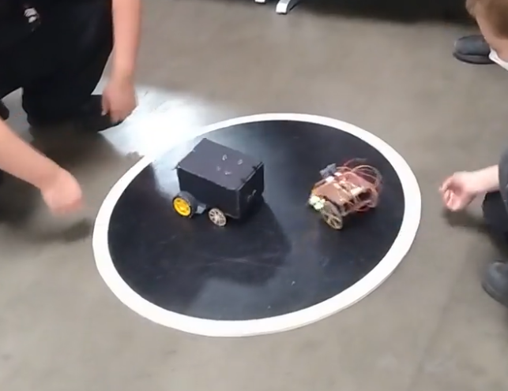
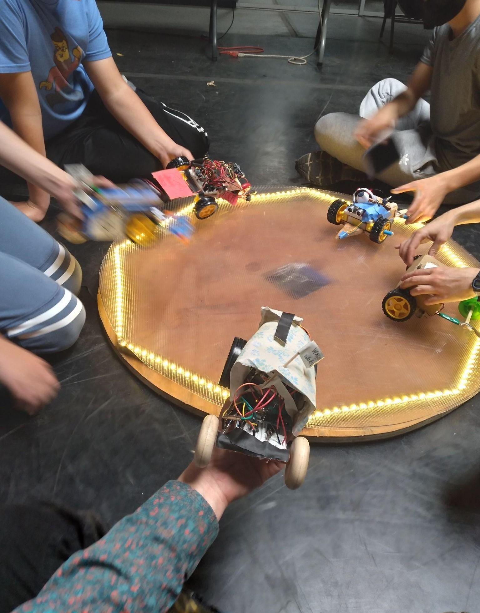
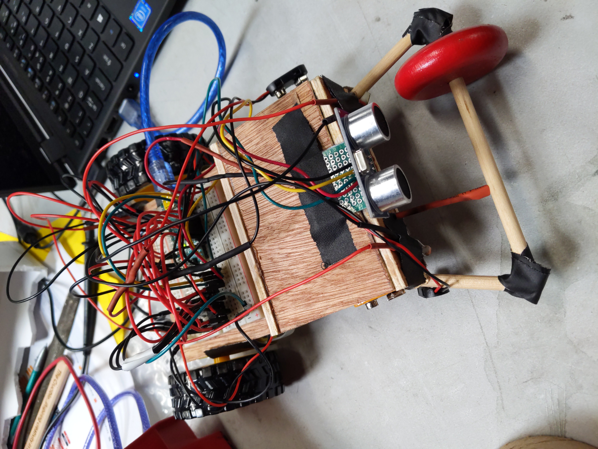

This was a youth class I developed and taught at the Crucible. Sumo bots are designed to work without controllers - they must sense their opponents as well as the boundaries of the arena.



Other classes taught:
Arduino - building smart art
Youth Electronics
(TA) User Interface Design and Development @ UC Berkeley